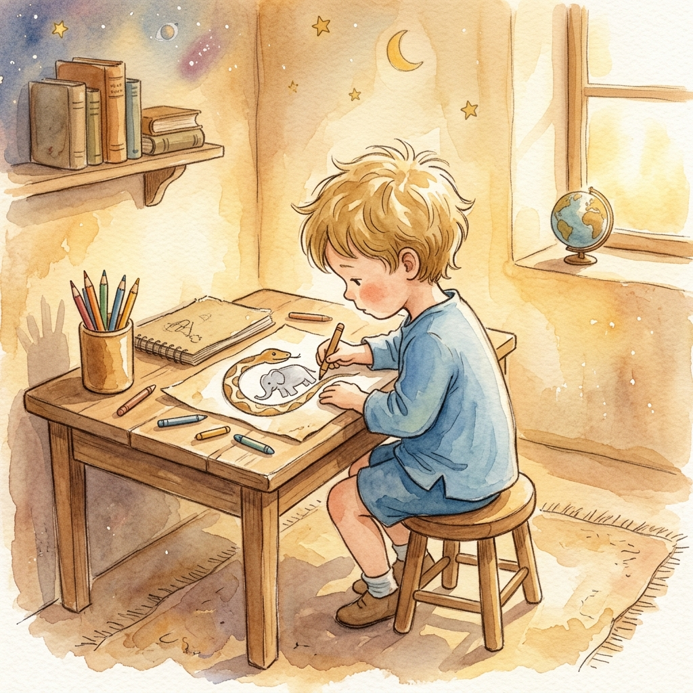

Chapter I
The Drawing

As a child, the narrator draws a boa constrictor digesting an elephant. Adults mistake it for a hat, discouraging his artistic ambitions. He grows up to become a pilot, forever aware of how "grown-ups" lack imagination.
"Grown-ups never understand anything by themselves, and it is tiresome for children to be always and forever explaining things to them."